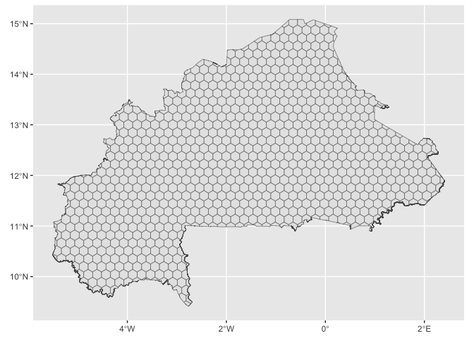

The goal of hexbur is to provides several layers of information for Burkina Faso, useful for agricultural systems analysis and more.
Installation
You can install the development version of hexbur from GitHub with:
# install.packages("devtools")
devtools::install_github("oousmane/hexbur")Example
The package is based on a hexagonal grid of Burkina Faso, to which data layers can be added. This grid may be loaded as follows, using the hex_map() function
A very quick viz of hex grids can be performed using sf and for sure the tidyverse
library(hexbur)
library(sf)
library(tidyverse)
hex <- hex_map() # with no args.
# Simple hex grid map
ggplot()+
geom_sf(data = hex)
You’ll still need to render README.Rmd regularly, to keep README.md up-to-date. devtools::build_readme() is handy for this.
You can also embed plots, for example:

In that case, don’t forget to commit and push the resulting figure files, so they display on GitHub and CRAN.